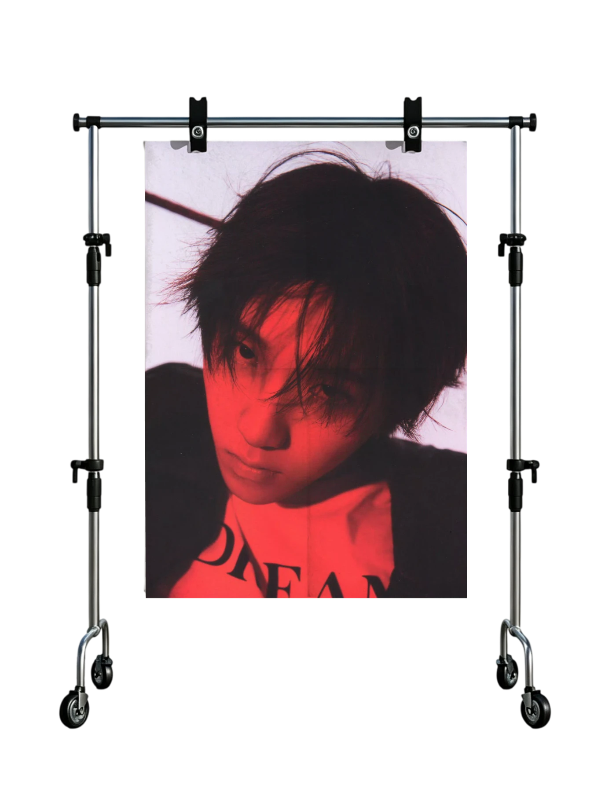
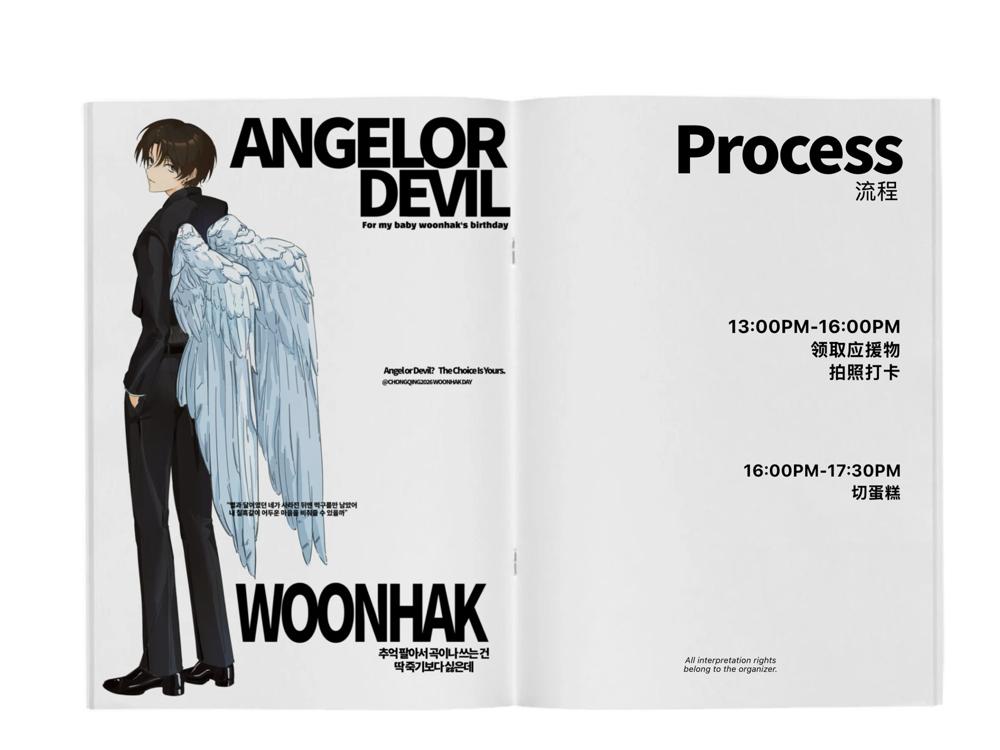
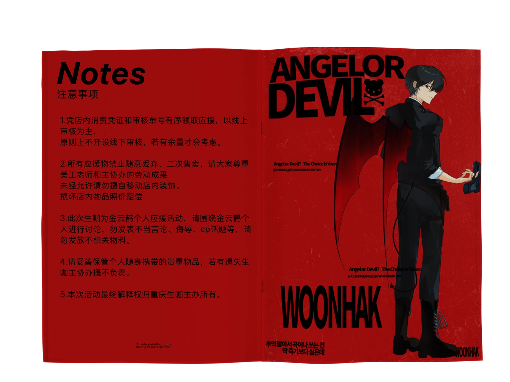

Angel or Devil? The Choice Is Yours.
CHONGQING 2026 · WOONHAK DAYFOR MY BABY
WOONHAK'S BIRTHDAY
rednoteCHONGQING 2026 · WOONHAK DAYFOR MY BABY
WOONHAK'S BIRTHDAY
生咖地址
举办时间
2026.11.2113:00—17:30



*WOONSTYLE
Woonhak’s daily outfits effortlessly blend hip-hop streetwear with a fresh, boy-next-door charm. He often picks relaxed, comfortable silhouettes, balancing cool street vibes with clean, uncomplicated styling. His fashion choices reflect his warm personality and independent mindset, showing he has his own clear taste and unique ideas.
ANGEL OR DEVIL@woonhakstyle